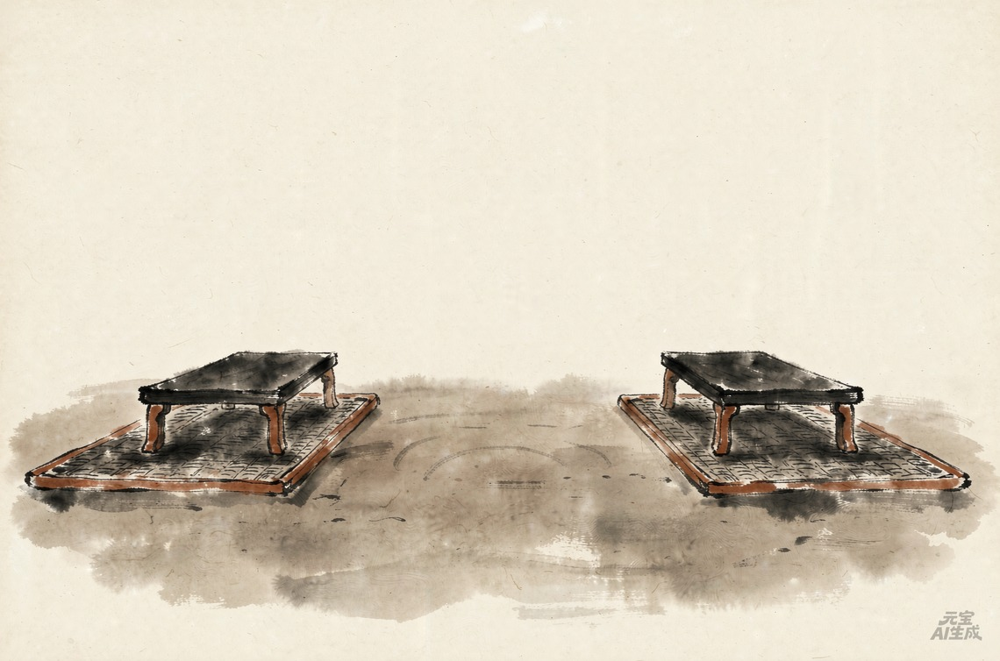
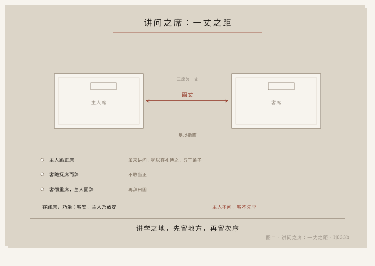

曲礼上 · 一·三十四 · 第 33 课
这一节讲非饮食之客——来讲问的客：两席之间要留一丈之地；主人跪着正席，客跪着抚席而辞；客要撤去重席，主人固辞；客登席才坐；主人不问，客不先开口。
说什么事：若非饮食之客，则布席，席间函丈；主人跪正席，客跪抚席而辞；客彻重席，主人固辞；客践席，乃坐；主人不问，客不先举。
落在哪一层：教。上节讲侍长者扫地奉席，这节讲待讲问之客的席。
为何编在此位：一·三十三讲布席之向，此节讲布席之距；向既明，距乃定。
【经】若非飲食之客，則布席，席間函丈。主人跪正席。客跪撫席而辭。客徹重席，主人固辭。客踐席，乃坐。主人不問，客不先舉。
函丈 疏：「函，容也。既来讲说，则所布两席，中间相去使容一丈之地，足以指画也。席之制，三尺三寸三分寸之一，则三席是一丈，故郑云容丈也。」王肃：「丈或为杖」，以讲说时用杖指画。
跪正席 郑注：「虽来讲问，犹以客礼待之，异于弟子。」
抚席而辞 客跪而以手抚席，辞主人之正席。
彻重席 客自撤其上重之席，示不敢当；固辞 郑注：「再辞曰固。」
践席乃坐 郑注：「客安，主人乃敢安也，讲问宜坐。」
主人不问，客不先举 郑注：「客自外来，宜问其安否无恙，及所为来故。若饮食之客，不须相对。」
若不是为饮食而来的客，就布席，两席之间留一丈之地。主人跪着把席摆正。客人跪着抚席辞谢。客人要撤去重叠的席，主人再三辞止。客人登席，才坐下。主人不发问，客人不先开口。
一节的要旨是「来讲说的人，仍按客礼待」。讲问本近师徒，此节偏以客礼处之：留一丈是做讲说的场地，跪正席是不以弟子相待，客彻席是不敢当，不先举是待问。
第一层 「席间函丈」是给讲说留的空间 疏说得极实：「中间相去使容一丈之地，足以指画也。」讲说不是坐着听，要有地方指、有地方画。一丈之距，按席制算是三席。这一条最见古人的「场地意识」：礼先安排空间，再安排话语。
第二层 主人跪正席：以客礼待讲问者 郑注点明：「虽来讲问，犹以客礼待之，异于弟子。」来学的人，不以弟子之礼待，而以客之礼待——这一句把「教」与「待」分开了。教可以严，待必须敬。
第三层 客跪抚席而辞、彻重席而主人固辞：一辞再辞 客辞正席，是「不敢当」；客自彻重席，也是「不敢当」。主人固辞——郑注「再辞曰固」，正合前节「礼辞、固辞、终辞」之序。一让一辞之间，双方都在给对方留位置。
第四层 践席乃坐：主客同时安 郑注：「客安，主人乃敢安也，讲问宜坐。」客未坐，主人不坐；客坐定，主人才坐。坐不是为了自己舒服，是「讲问宜坐」——讲说之事，须坐而谈。
第五层 主人不问，客不先举：开口的时机 郑注把主人的义务也写了：「客自外来，宜问其安否无恙，及所为来故。」主人该问安、问来意；主人不问，客不先开口。此条与一·二十九「必慎唯诺」相承：等问再应。
与今日何干 今日会客、访谈、请教，多是客人进门即自我介绍、主人未问先自陈。此节给的次序很稳：主人先问安与来意，客不抢话；坐定了再谈。谈学问的地方，先把地方留出来。
| 左 | 右 |
|---|---|
| 非饮食之客，则布席 | 讲问之客，礼数与饮食客别 |
| 席间函丈 | 容一丈之地，足以指画 |
| 主人跪正席 | 虽来讲问，犹以客礼待之 |
| 客跪抚席而辞 | 不敢当正 |
| 客彻重席，主人固辞 | 再辞曰固 |
| 客践席，乃坐 | 客安，主人乃敢安 |
| 主人不问，客不先举 | 主人宜问安否与来故 |

